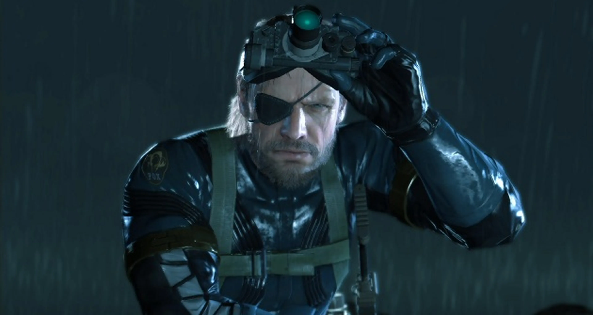
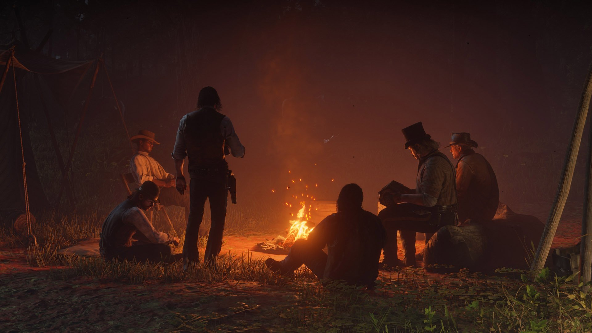
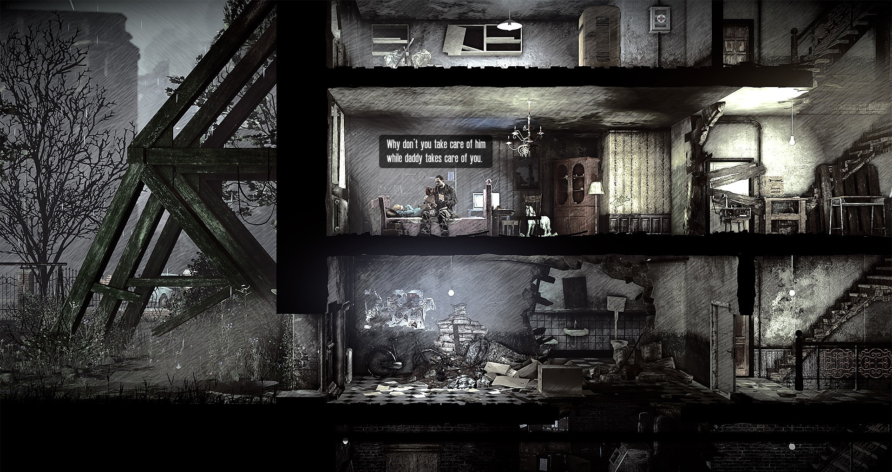
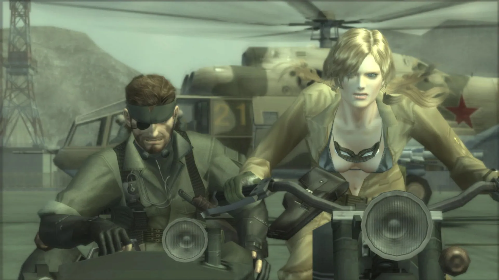
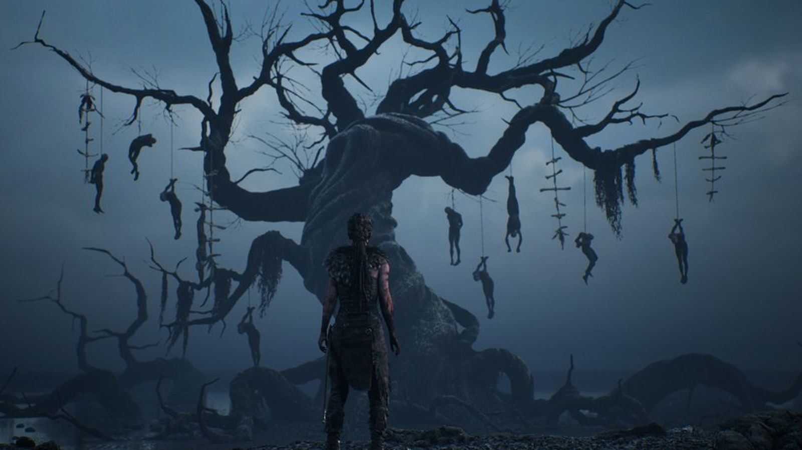
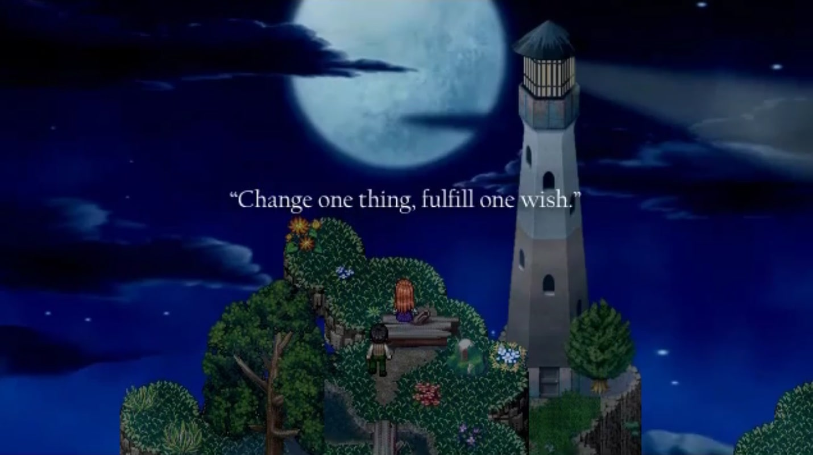
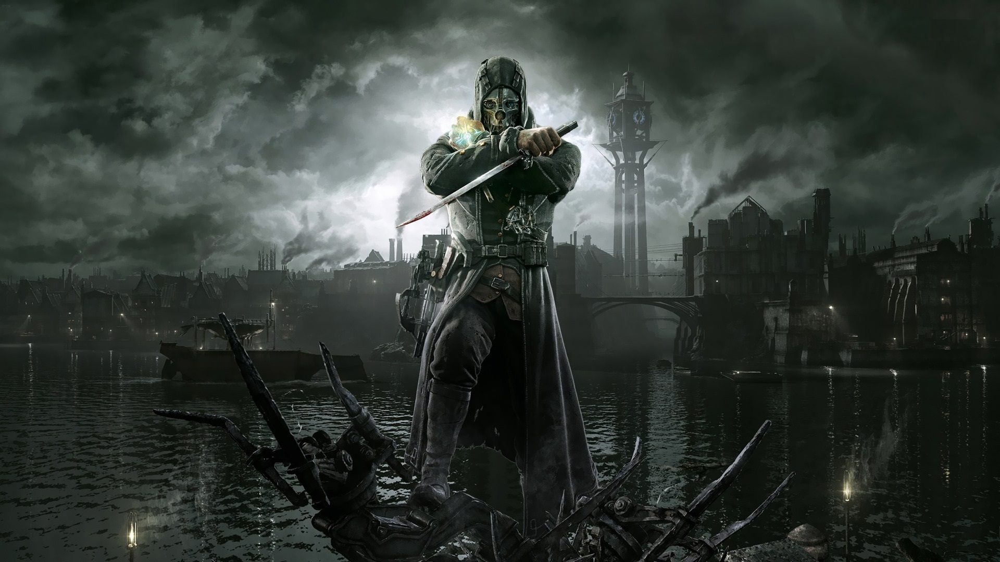
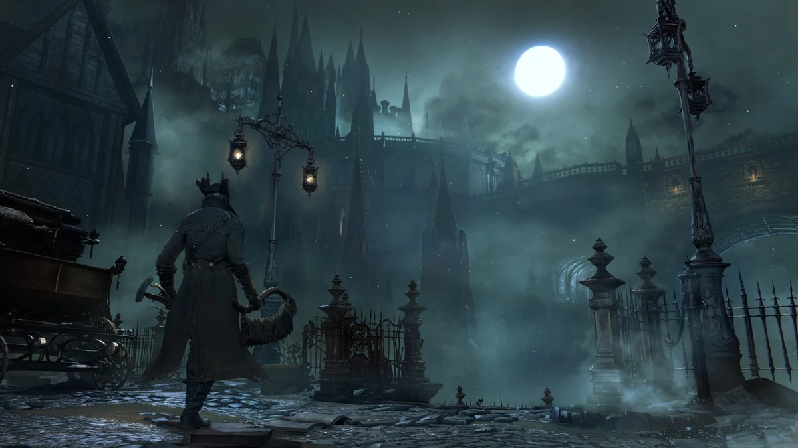
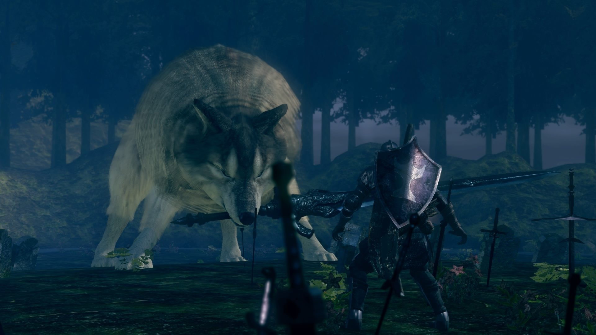
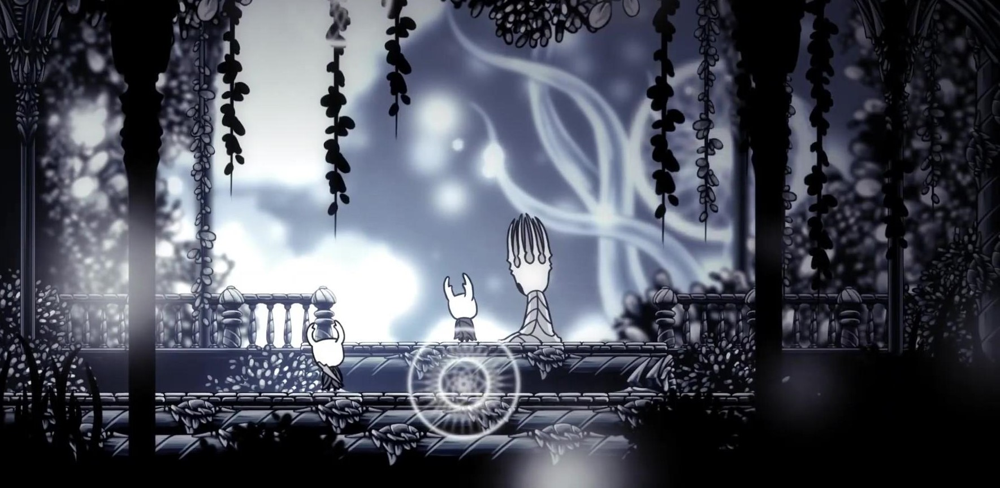

Top 10 Videoiochi
I 10 miei giochi preferiti

Quando mi devo descrivere uso sempre l'aggettivo Pragmatico e per giunta mi sono anche sempre definito Ateo.
Sono ancora convinto delle mie idee ma trovo che ci sia una cosa che si avvicina alla Sacralità per me, quella sensazione di Trascendenza e Contemplazione e questa cosa è l'Arte.
In questo articolo elenco i 10 giochi che hanno fatto sorgere maggiormente in me queste sensazioni uniche. Sensazioni di Universalità e Intimità allo stesso tempo.
PS: Ricordo che questa è la mia top 10. Molti giochi per ovvie ragioni di tempo non li ho mai giocati. Ho preferito questi giochi per ragioni puramente personali che potrebbero non essere condivise ma spero siano comprese.
PPS: Questo articolo è stato pubblicato con il suo gemello, la top 100, vi invito ad andarla a vedere se dovesse interessarvi.
10. Metal Gear Solid V: Ground Zeros
Software House: Kojima Productions
Autore: Hideo Kojima
La storia che ho avuto con la saga di Metal Gear penso sia considerabile non convenzionale: quando ero piccolo avevo in casa la PS1, non perchè io fossi un videogiocatore all'epoca (stavo appena muovendo i miei primi passi con il mondo dei Videogiochi) ma perchè lo erano i miei (non è così figo come sembra). Ricordo distintamente mio padre che giocava a Metal Gear Solid ma dopo poco lo mollò per tornare a giocare al suo amato Pro Evolution Soccer (all'epoca International Superstar Soccer), le critiche erano le più comuni dell'epoca: è un gioco action dove non si spara, non c'è un vero Gameplay, non mi diverto a scappare.
Era nato il genere Stealth.
Quindi per molti anni non sento più parlare del francise Metal Gear fino a che non compro un Humble Bundle con molti giochi popolari Konami, dove all'interno c'era Metal Gear Solid V: The Phantom Pain. Non ci faccio troppo caso e lo abbandono nella mia libreria Steam a prendere polvere. Fino a che non sento parlare bene della saga da Sabaku no Maiku, noto youtuber che all'epoca conoscevo per i giochi From. Mi genera talmente tanta curiosità che decido di prendere la Legacy Collection per PS3 e e di recuperarmeli tutti.
Fast Forward di qualche mese. Ho ormai giocato fino al capitolo Peacewalker per PSP. Sento sensazioni contrastanti in me: un'incredibile estasi per aver recuperato una saga così tanto importante e bella ma anche un po' di stanchezza che mi porterebbe a prendermi una pausa dalla saga e tornarci in seguito (chi mi conosce sa che mi stanco molto facilmente e ho bisogno di tempi di recupero per farmi tornare la voglia). Ma stringo i denti e inizio Ground Zeros, anche perchè avevo sentito che serviva solo come introduzione di poche ore a The Phantom Pain e che era stato fatto come astuta mossa di marketing di Konami per spillare più soldi al fan.
Finite le effettivamente poche ore di gioco ero emotivamente distrutto, a piangere da solo davanti ad uno schermo per una storia che era un'introduzione a the Phantom Pain ma sarebbe riduttivo definirla solo così. Riesce con poche "note" a suonare una melodia indimenticabile, che tocca i temi del tradimento, della femminilità, della prigionia e del sacrificio.
Hideo Kojima non è solamente un maestro di Narrativa e di Regia, sbertucciato dai detrattori come un regista mancato, ma anche un geniale Game Designer, e ci presenta in poche ore tutta la magnificenza del suo Game Design, uno stealth sopraffino, e un impatto estetico formidabile tutt'ora.
IN UNA PAROLA: Indimenticabile
9. Red Dead Redemption II
Software House: Rockstar North
Autore: Imran Sarwar, Dan Houser
Era il 2018, e mentre io stavo recuperando giochi come Dishonored 2 e Prey, escono 2 giochi destinati a riempire le ore dei console gamer per quell'anno: God of War e ovviamente Red Dead Redemption 2. Entrambi esclusive console (uno esclusiva Playstation), che subito risulta chiaro che si contenderanno il titolo di gioco dell'anno per il pubblico videoludico mainstream.
Io, essendo un PC gamer (non per ideologia ma per comodità economica e logistica) vedo il dibattito da fuori e cerco di farmi un'idea sui due titoli. Sembra che non sia il solito schieramento ideologico ma che il dibattito sia più profondo: tra chi apprezza i giochi più guidati verso una narrazione molto ben curata e tempi più filmici, e chi invece elogia la grande libertà e la vita del mondo di gioco e da un peso maggiore a quell'aspetto.
Io mi sono sempre convinto di essere più della prima categoria (e in parte lo sono ancora) e quindi che avrei apprezzato di più la narrazione e la spettacolarità di un God of War in grande spolvero, che prometteva una storia profonda e botte da orbi. Non mi sono mai piaciuti i giochi "simulativi", ne quelli di guida o pilotaggio, ne quelli di guerra alla Arma ne i vari Farming, Truck o Dishwasher Simulator del caso.
Dopo un'anno circa sbarca su PC Red Dead Redemption 2, e per qualche motivo, in uno dei vari sconti di Epic Games me lo porto a casa. Per intenderci, God of War non era ancora uscito su PC, quindi non avrei potuto dirottare quell'acquisto sul gioco di Santa Monica.
Lo inizio con molta paura e con le critiche più popolari che mi girano in testa: movimenti legnosi, shoting impreciso, spazi ampi dove non succede niente per chilometri. Nella mia mente non c'erano chiaramente solo paura e diffidenza ma anche molta curiosità e felicità per la possibilità di provare un gioco così mediaticamente importante.
LE PRIME ORE: l'impatto iniziale è traumatico, un gameplay molto lento e sorprendentemente inquadrato che mi fa quasi esclamare "perchè tutti dicono che il gioco è così libero?". La narrazione è più presente di quello che si può pensare ma comunque di ottima qualità e l'impatto di insieme è notevole.
IL GIOCO EVOLVE: dopo del tempo per presentare i personaggi il gioco muta, passando da una fase di tutorial mascherata molto bene
alla libertà tanto decantata da tutti.
Il gioco diventa un'esperienza immersiva di altissimo livello e ogni cosa è curata nei minimi dettagli.
Il gioco possiede due anime: quella Free Roaming e quella Narrativa. Non è nulla diverso da quello che si era già visto nei giochi commerciali Open World più importanti ma qui è tutto fatto meglio, lo chiamo Rockstar Difference.
La parte Free Roaming è eccelsa, con molto nulla sulla mappa ma che non fa storcere il naso, anzi, genera più immedesimazioni nel giocatore che sente di star viaggiando in territori ancora non civilizzati dagli uomini occidentali. Ma nei pochi luoghi in cui c'è qualcosa ti stupisce ogni volta.
Voglio fare un esempio: Sto cavalcando ormai da ore in cerca di una pianta necessaria per progredire con una missione e nel mio girovagare mi imbatto in una delle tante persone che riposano con il loro falò, la loro tenda e i loro possedimenti gelosamente difesi. La diffidente persona, vedendomi, si allerta e, giustamente, tira fuori la sua pistola e mi intima di andare via (in quel periodo non mi sarei fidato neanche io). Fino a qui la scena è tra le più comuni: ogni tanto ti sparano, ogni tanto ti minacciano, ogni tanto sono più fiduciosi e ti salutano senza accennare a minacciarti ma questa volta è stata diversa: il malcapitato minacciandomi si alza in piedi, inciampa sul terreno e cade dritto dentro al falò, iniziando a prendere fuoco, urlando e piangendo. In pochi minuti era morto e il povero Arthur (il protagonista) ha potuto solo assistere a questa scena impotente. Questa cosa qua non mi è mai più ricapitata in un centinaio di ore di gioco. Quale gioco può vantare una cura così meticolosa?
Passiamo alla Narrativa: il gioco è speciale, forse non la migliore storia mai vissuta ma certamente tra le più belle, non tanto per la storia in se o per come è stata narrata ma per l'interazione tra missioni principali e secondarie e come (seppur non cambia praticamente niente) ti dia la sensazione di veder maturare Arthur nel suo viaggio.
È tipica la sensazione nei giochi Open World che ci sia una cosa urgentissima da svolgere, tipicamente la missione principale, ma poi non sia così urgente perchè il giocatore passa 30 ore a fare sidequests che mostrano la poca urgenza della Main Quest. Questo schema è presente nel sempre blasonatissimo The Witcher 3, o in molti Assassin's Creed, o in Cyberpunk 2077 per citarne alcuni. In Red Dead Redemption questa pressione non c'è fino ad un certo punto dove il gioco narrativamente accellera ma fino a quel punto la Main Quest ti invita ad esplorare dicendoti "tranquillo, io ti aspetto qua".
LA CONCLUSIONE: Il gioco si chiude con delle scene che me le porterò nel cuore, sono delle scene bellissime perchè chiudono un percorso fatto con Arthur che lo vedono evolvere, ragionare, maturare e prendere scelte difficili. Io vedo Red Dead Redemption 2 come una storia di crescità di un uomo fuori età massima, un eterno Peter Pan che ha fatto cose orribili che si rende conto che deve crescere e che ha la forza di cambiare anche se fuori età massima.
IN UNA PAROLA: Introspettivo
8. This War of Mine
Software House: 11 bit Studios
Autore: Michael Oracz, Jakub Wiśniewski
Primo ma non ultimo gioco Indie di questa lista. Gioco privo di Narrativa esplicità ma solo di scenari, che portano inevitabilmente a finali diversi. Un gioco che riesce a farti vedere la guerra da un punto di vista poco esplorato nei videogiochi ma fondamentale per capire cosa significa Guerra.
Il gioco è definibile come gestionale con visuale laterale di un nucleo famigliare improvvisato di persone, tutte con una loro storia caratteristica, che cercano di conoscersi e sopravvivere insieme fino a che la guerra non ha fine. E' chiaro per chiunque lo abbia giocato che questa descrizione è riduttiva: all'interno di questo gioco c'è tutto il dramma della guerra vista dagli occhi di un civile e tutta la brutalità che la guerra fa uscire fuori dalle persone.
Si inizia quasi sempre con una situazione tragica ma stabile, con una casa, non in buone condizioni, che piano piano si inizia a popolare di persone molto eterogenee tra loro e andando avanti con la partita iniziano ad emergere le necessità che Maslow definirebbe primarie: la fame, il sonno, il freddo iniziano ad attanagliare i protagonisti che devono cercare un modo per rimanere vivi, un modo che non sempre si rivela "umano".
PER FARE UN ESEMPIO: nelle prime ore di gioco si scopre la meccanica dello Scavenging, la notte uno degli abitanti della casa ha la possibilità di esplorare altri stabili per trovare risorse utili per mangiare, costruire e curare. Ogni Location ha un valore di pericolosità e una dei primi luoghi che il giocatore sceglie è una casa tranquilla, rischio nullo ma piena di risorse (secondo il gioco). Presentandosi davanti alla casa però quello che si trova fa rimpiangere di non aver trovato dei banditi degni di essere saccheggiati, fa rimpiangere di non aver trovato perfino cadavere: si trova una coppia di anziani spaventati e malati, indifesi che inizialmente ti minacciano in modo timido, passano poi subito ad implorarti ed infine a implorarti di non prendere proprio tutto ma di lasciargli almeno le medicine. Nella mia prima partita avevo un personaggio malato a casa e mi sono detto che non potevo lasciare le medicine, che loro erano anziani ma il mio personaggio era giovane. La notte dopo, tornato in quella casa, per ridare agli anziani le medicine prese il giorno prima lo spettacolo è stato raggelante: la coppia si era suicidata lasciando una lettera straziante.
Questo è uno dei tanti scenari che This War of Mine regala al giocatore, scelte difficili, storie dure e conseguenze insostenibili. E' un gioco con un amabile game design ma che non ti lascia mai goderne, invece ti tira dei pugni dallo stomaco che ti inducono all'abbandono del gioco. L'unica cosa che ti tiene incollato: la possibilità i tuoi personaggi vivi fino alla fine della guerra.
Questo gioco, battente bandiera Polacca, è sviluppato da un Team con anche persone che hanno vissuto l'assedio si Sarajevo, persone segnate da un trauma che in questo gioco provano e secondo me riescono a trasmettere al giocatore.
IN UNA PAROLA: Doloroso
7. Metal Gear Solid 3: Snake Eater
Software House: Kojima Productions
Autore: Hideo Kojima
6. Hellblade: Senua's Sacrifice
Software House: Ninja Theory
Autore: Tameem Antoniades
5. To the Moon
Software House: Freebird Games
Autore: Kan "Reives" Gao
4. Dishonored
Software House: Arkane Studios
Autore: Raphaël Colantonio, Harvey Smith
3. Bloodborne
Software House: FromSoftware
Autore: Hidetaka Miyazaki
2. Dark Souls
Software House: FromSoftware
Autore: Hidetaka Miyazaki
1. Hollow Knight
Software House: Team Cherry
Autore: Ari Gibson, William Pellen